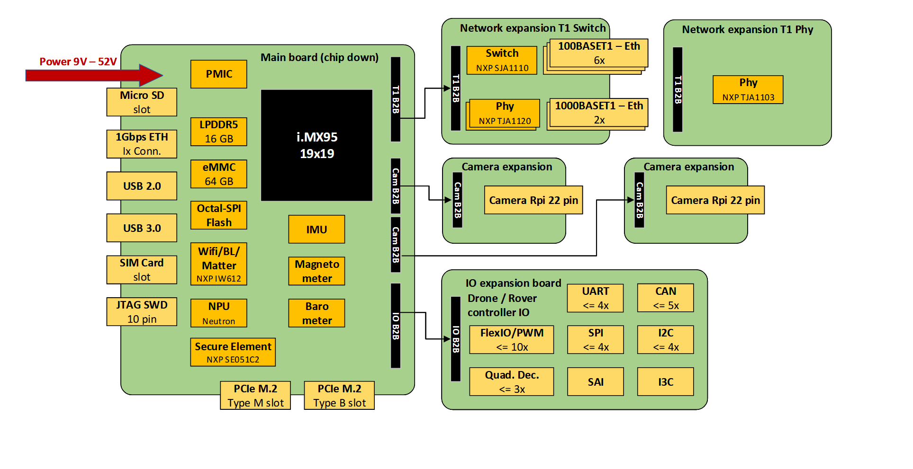

MR-NAVQ95
Tags: arch:arm chip:imx9 part:imx95 vendor:nxp
The MR-NAVQ95 is an open-source development board designed for mobile robotics applications. It is built around the i.MX 95 automotive applications processor. Its heterogeneous processing cores make it well-suited for running both real-time tasks and compute-intensive workloads.
Features
- Multicore Processing [1]
1x Arm Cortex-M7
6x Arm Cortex-A55 multicore complex
1x Arm Cortex-M33
- Memory
- On-Chip Memory
1376KiB SRAM (ECC)
- External Memory
16 GiB LPDDR5 (Up to 6.4GT/s, with Inline ECC & Inline Encryption)
64 MiB MX25UM51345G (Octal SPI)
Connectivity
The MR-NAVQ95 is composed of a main board as its base and can be extended with optional add-on modules.

SD-card image
The simplest way to run NuttX on the MR-NAVQ95’s M7 core is to use the standard SD-card image. You can find the instructions for creating this image here.
Serial Console
By default the console is set to UART2. The most convenient method to connect to the serial console is through the USB-C port on the I/O expansion board (J10). The integrated FT2232HQ enables access to UART1 and UART2. UART2 is additionally exposed on the main board at connector J2, which uses a JST-GH connector and therefore requires a special cable.
J-Link External Debug Probe
The MR-NAVQ95 board provides a 2x5-pin 1.27mm header (J7) for connecting a JTAG debugger for debugging the i.MX95 processor.
PyOCD provides support for both the i.MX95’s M33 and M7 cores. It also includes support for programming the MX25UM51345G external flash.
Firmware location
Flash
The external MX25UM51345G NOR flash on the MR_NAVQ95 is reserved for the M7 firmware. In the standard SD-card image, the System Manager (M33) loads MCUBoot into ITCM. After initialization, MCUBoot checks the external flash for a valid firmware image and, if one is found, executes it directly in place (XIP). To allow MCUBoot to authenticate the firmware properly, the binary must include a valid MCUBoot header. This header can be added using the imgtool.py utility provided with MCUBoot.
Use the following commands to create the binary with header and to program it using pyocd:
./imgtool.py sign --version 1.0.0 --header-size 0x800\
--slot-size 0x700000 --pad-header nuttx.bin\
nuttx.mcuboot.bin
pyocd flash -t mimx95_cm7_mx25um nuttx.mcuboot.bin
Instruction Tightly Coupled Memory (ITCM)
The purpose of the Tightly-Coupled Memory (TCM) is to provide low-latency memory that the processor can use without the unpredictability that is a feature of caches. By default the firmware will be located in this area (256K).
pyocd flash -t mimx95_cm7 nuttx.bin
Note
Please be aware that the standard SD-card uses the ITCM section to run MCUboot
DDR
DDR memory can be used in case the code memory footprint becomes bigger than the ITCM size. Using this configuration implies that other cores should be aware of this. The standard SD-card image for the MR-NAVQ95 allocates the 0x90000000-0x90400000 memory region exclusively to the M7 core. The A55 subsystem is configured to avoid this range.
Configurations
nsh
Configures the NuttShell (nsh) located at examples/nsh. This NSH configuration is focused on low level, command-line driver testing. Built-in applications are supported, but none are enabled. This configuration does not support a network.
rpmsg
This configuration is similar to nsh but in addition it offers the Remote Processing Messaging (RPMsg) service to enable heterogeneous inter-core communication. A virtual UART (CONFIG_RPMSG_UART) is made available on which an OS running on the A55 cores can connect. There is also an option to use the filesystem client feature in which a remote directory can be mounted to a local directory (CONFIG_FS_RPMSGFS).
The default sd-card image has made the RPMsg UART driver and the RPMsg FS driver available who are compatible to NuttX.